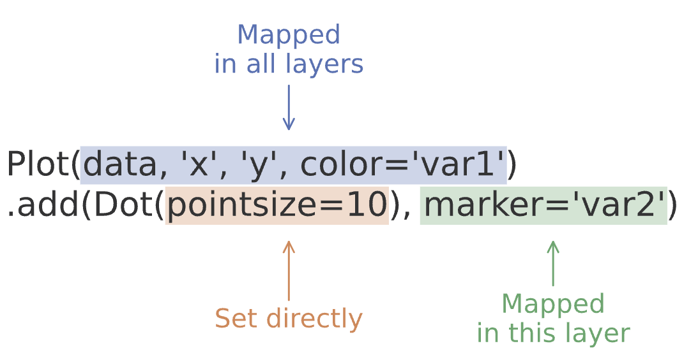

데이터 분석의 과정
R for Data Science
Transform (데이터 변형)
데이터의 변수들 중 일부를 선택하기
필요한 부분를 필터링하기
기존의 변수들로 새로운 변수 만들기
요약자료를 계산하기
Visualise (시각화)
시각화를 통해 데이터가 품고 있는 정보를 파악하여 데이터에 대한 이해를 높임
Model (모형)
시각화와 데이터 변형의 두 가지를 병행하면서 호기심과 의구심을 갖고 연구자가 자신의 관심사에 답을 구하는 탐색적 분석을 하는 과정
이 과정에서 모형을 세우고 데이터를 얼마나 잘 설명하는지를 살펴보고, 모형을 수정해 나가는 과정을 거침
First steps
Load packages
# numerical calculation & data frames import numpy as npimport pandas as pd# visualization import matplotlib.pyplot as pltimport seaborn as snsimport seaborn.objects as soimport plotly.express as px# statistics import statsmodels.api as sm
Data: Fuel economy data from 1999 to 2008 for 38 popular models of cars
# import the dataset = sm.datasets.get_rdataset("mpg" , "ggplot2" )= mpg_data.data
# Description print (mpg_data.__doc__)
manufacturer
model
displ
year
cyl
trans
drv
cty
hwy
fl
class
0
audi
a4
1.8
1999
4
auto(l5)
f
18
29
p
compact
1
audi
a4
1.8
1999
4
manual(m5)
f
21
29
p
compact
2
audi
a4
2.0
2008
4
manual(m6)
f
20
31
p
compact
3
audi
a4
2.0
2008
4
auto(av)
f
21
30
p
compact
4
audi
a4
2.8
1999
6
auto(l5)
f
16
26
p
compact
...
...
...
...
...
...
...
...
...
...
...
...
229
volkswagen
passat
2.0
2008
4
auto(s6)
f
19
28
p
midsize
230
volkswagen
passat
2.0
2008
4
manual(m6)
f
21
29
p
midsize
231
volkswagen
passat
2.8
1999
6
auto(l5)
f
16
26
p
midsize
232
volkswagen
passat
2.8
1999
6
manual(m5)
f
18
26
p
midsize
233
volkswagen
passat
3.6
2008
6
auto(s6)
f
17
26
p
midsize
234 rows × 11 columns
Q: 엔진의 크기(displ)와 연비(hwy)는 어떤 관계에 있는가?
# Scatter plot: 산포도 = "displ" , y= "hwy" ) # empty plot을 생성하고, x, y축에 mapping할 mpg 데이터의 변수를 지정 # layer를 추가하여, points들을 Dot이라는 mark object를 써서 표현
Layer-specific mappings
다음과 같이 첫번째 layer 안에서 x, y를 mapping하는 경우, 이후 새로 추가되는 layer에는 그 mapping이 적용되지 않음
(
so.Plot(mpg)
.add(so.Dot(), x="displ", y="hwy") # 이 layer에서만 mapping이 유효
)
다음과 같이 x, y를 생략하거나 간략히 할 수 있으나…
so.Plot(mpg, "displ", "hwy").add(so.Dot())
카테고리 변수인 경우
cyl (실린더 개수), hwy (고속도로 연비)의 관계를 scatterplot으로 살펴볼 수 있는가? (left)
class (차량 타입), drv (전륜 구동, 후륜 구동, 4륜 구동 타입)의 관계는 어떠한가? (right)
Aesthetic mappings
Q: 엔진의 크기와 연비와의 관계에서 보이는 트렌드 라인에서 심하게 벗어난 것이 있는가?
색(color), 크기(pointsize), 모양(marker), 선 종류(linestyle), 투명도(alpha)
Color
= "displ" , y= "hwy" , color= "class" )
Pointsize
= "displ" , y= "hwy" , pointsize= "class" )
Marker
= "displ" , y= "hwy" , marker= "class" )
Alpha
= "displ" , y= "hwy" , alpha= "class" )
Linestyle
= sns.load_dataset("healthexp" )= so.Plot(healthexp, x= "Spending_USD" , y= "Life_Expectancy" , linestyle= "Country" )
두 가지 이상의 속성
ex. color & marker
= "displ" , y= "hwy" , color= "class" , marker= "drv" )
= "displ" , y= "hwy" , color= "class" , pointsize= "drv" )= (5 , 15 )) # pointsize의 range설정
어떤 속성을 어떤 변수에 할당하는 것이 적절한지를 선택하는 것이 기술
연속 vs. 카테고리 변수 여부에 따라 다르게 작동
= so.Plot(mpg, x= "displ" , y= "hwy" , color= "class" ).add(so.Dot()).layout(engine= "constrained" )= so.Plot(mpg, x= "displ" , y= "hwy" , color= "cty" ).add(so.Dot()).layout(engine= "constrained" )
Figure 1: Categorical vs. Continuous
= "displ" , y= "hwy" , color= "cty" )= so.Continuous("crest" , norm= (0 , 50 ), trans= "sqrt" ))
Setting properties
Setting properties vs. mapping properties (aesthetic)

변수 에 속성을 할당하는 것이 아니라, graphical objects (Marks)의 속성을 지정
Marks (.Dot, .Line, .Bar, …) 마다 설정할 수 있는 속성이 다름
주로 쓰이는 속성들: color, pointsize, alpha
.Dot()의 경우class seaborn.objects.Dot(artist_kws=, marker=<‘o’>, pointsize=<6>, stroke=<0.75>, color=<‘C0’>, alpha=<1>, fill=, edgecolor=, edgealpha=, edgewidth=<0.5>, edgestyle=<‘-’>)
.Dots()의 경우class seaborn.objects.Dots(artist_kws=, marker=<rc:scatter.marker>, pointsize=<4>, stroke=<0.75>, color=<‘C0’>, alpha=<1>, fill=, fillcolor=, fillalpha=<0.2>)
API reference 참고
= "displ" , y= "hwy" )= "deepskyblue" )) # Mark object 안에 지정!
= "displ" , y= "hwy" )= "deepskyblue" , pointsize= 12 , edgecolor= "white" , edgewidth= 1 )) # Mark object 안에 지정!
= "displ" , y= "hwy" )= "orange" , pointsize= 12 , marker= ">" , alpha= .4 )) # Mark object 안에 지정!
Faceting
카테고리 변수들이 지니는 카테고리들(레벨)로 나누어 그리기
Data: palmerpenguins
@allison_horst
= sns.load_dataset("penguins" ) # load a dataset: penguins
species
island
bill_length_mm
bill_depth_mm
flipper_length_mm
body_mass_g
sex
0
Adelie
Torgersen
39.1
18.7
181.0
3750.0
Male
1
Adelie
Torgersen
39.5
17.4
186.0
3800.0
Female
2
Adelie
Torgersen
40.3
18.0
195.0
3250.0
Female
3
Adelie
Torgersen
NaN
NaN
NaN
NaN
NaN
4
Adelie
Torgersen
36.7
19.3
193.0
3450.0
Female
= "body_mass_g" , y= "flipper_length_mm" )"sex" ) # 기본적으로 columns으로 나누어져 그림 = .5 ))
= "body_mass_g" , y= "flipper_length_mm" )= "species" , row= "sex" )= .5 ))
Facet과 Color 중 어떤 방식으로 표현하는 것이 유리한가? 밸런스를 잘 선택!
= (= "body_mass_g" , y= "flipper_length_mm" )= "species" )= .5 ))= (= "body_mass_g" , y= "flipper_length_mm" , color= "species" )= .5 ))
Figure 2: faceting vs. color mapping
Pairing
Faceting이 변수 내에 다른 레벨 에 따라 그려지는데 반해,다른 변수 를 지정하여 그림
= "body_mass_g" , color= "species" ) # y축은 공유 = ["bill_length_mm" , "bill_depth_mm" ]) # x축에 다른 변수를 mapping # .Dots()! overploting에 유리. .Dot(alpha=.)로도 비슷
Facet & pair 동시
= "body_mass_g" , color= "sex" )= ["bill_length_mm" , "bill_depth_mm" ])= "species" )
Multiple plots
개발 중…? Matplotlib을 이용
import matplotlib as mpl= mpl.figure.Figure(figsize= (8 , 4 ))= f.subfigures(1 , 2 )= "body_mass_g" , y= "flipper_length_mm" )= "bill_length_mm" , y= "flipper_length_mm" )= "sex" )
Save plots
p.save("data/filename.png") # p: a plot oject
Geometric objects
Dot marks: DotDots
Line marks: LineLines, Path, Paths, Dash, Range
Bar marks: BarBars
Fill marks: Area, Band
Text marks: Text
Visualizing distributions
분포를 살펴보는데 변수가 연속인지 카테고리인지에 따라 다른 방식
A categorical variable
= sns.load_dataset("tips" )
<class 'pandas.core.frame.DataFrame'>
RangeIndex: 244 entries, 0 to 243
Data columns (total 7 columns):
# Column Non-Null Count Dtype
--- ------ -------------- -----
0 total_bill 244 non-null float64
1 tip 244 non-null float64
2 sex 244 non-null category
3 smoker 244 non-null category
4 day 244 non-null category
5 time 244 non-null category
6 size 244 non-null int64
dtypes: category(4), float64(2), int64(1)
memory usage: 7.4 KB
= "day" )# category type의 변수는 순서가 존재. 그렇지 않은 경우 알바벳 순서로
= sns.load_dataset("penguins" ) # load a dataset: penguins # Species에 inherent order가 없음 = "species" )
표시 순서를 변경하는 일은 의미있는 플랏을 만드는데 중요
= penguins["species" ].value_counts().index.values#> array(['Adelie', 'Gentoo', 'Chinstrap'], dtype=object) = "species" )= so.Nominal(order= cl)) # x축의 카테고리 순서를 변경
A numerical variable
= "body_mass_g" )# Histogram # .Bars()는 .Bar()에 비해 연속변수에 더 적합: 얇은 경계선으로 나란히 붙혀서 그려짐
= (= "body_mass_g" )= 100 )) # binwidth vs. bins = (= "body_mass_g" )= 10 )) # binwidth vs. bins
Figure 5: binwidth vs. bins
= "body_mass_g" )# Density plot
# Density plot: 넓이가 1이 되도록 = "body_mass_g" )= .2 )) # Density bandwidth: binwidth에 대응 = .3 ), so.Hist("density" )) # y축이 count가 아니 density
Visualizing relationships
A numerical and a categorical variable
boxplot, frequency polygon, density plot
Boxplot
= "species" , y= "body_mass_g" )# 생략해도 무방
= "species" , y= "body_mass_g" )= ".5" ), so.Jitter()) # .Jitter(): 흐트려뜨려 그리기 = 8 ), so.Agg("median" )) # .Agg(): aggregation, default는 mean "median" , errorbar= ("pi" , 50 ))) # .Range(): 기본 min/max range, .Est(): estimator
= "species" , y= "body_mass_g" , color= "sex" )= 5 ), so.Agg("median" ), so.Dodge())"median" , errorbar= ("pi" , 50 )), so.Dodge())
= "species" , y= "body_mass_g" , hue= "sex" )# 생략해도 무방
Frequency polygon
= "body_mass_g" , color= "species" )= "." ), so.Hist(binwidth= 200 )) # Line에 maker "."을 표시
Grouped density plot
= "body_mass_g" , color= "species" )= ["color" ])) # Density plot, species별로 넓이가 1이 되도록
Two categorical variables
= so.Plot(penguins, x= "island" , color= "species" )# Bar() mark + Count() transformation
= p.add(so.Bar(), so.Count(), so.Dodge()) # 나란히 표시 = p.add(so.Bar(), so.Count(), so.Stack()) # stacking
Figure 6: dodge vs. stack
Count 대신 proportion을 표시하는 경우
= .5 ), so.Hist(stat= "proportion" , common_norm= ["x" ]), # proportion # stacking
/Users/georgeair/miniconda3/envs/envconda/lib/python3.11/site-packages/seaborn/_stats/counting.py:228: UserWarning: Undefined variable(s) passed for Hist.common_norm: 'x'.
self._check_grouping_vars("common_norm", grouping_vars)
= .8 ), so.Hist(stat= "proportion" , common_norm= ["x" , "col" ]), # proportion # stacking = "sex" ) # faceting
/Users/georgeair/miniconda3/envs/envconda/lib/python3.11/site-packages/seaborn/_stats/counting.py:228: UserWarning: Undefined variable(s) passed for Hist.common_norm: 'x'.
self._check_grouping_vars("common_norm", grouping_vars)
Two numerical variables
Scatterplot
= "flipper_length_mm" , y= "body_mass_g" )
Three or more variables
= "flipper_length_mm" , y= "body_mass_g" ,= "species" , marker= "island" )= (6 , 4 ))
Facet의 활용
= "flipper_length_mm" , y= "body_mass_g" ,= "species" )= .5 ))"island" )= (8 , 4 ))
Time series
= sns.load_dataset("healthexp" )= "Year" , y= "Spending_USD" , color= "Country" )
= "Year" , y= "Life_Expectancy" )= .3 ), group= "Country" , col= None )= 3 ))"Country" , wrap= 3 )
= sns.load_dataset("fmri" )= so.Plot(fmri, "timepoint" , "signal" , color= "region" , linestyle= "event" )
= "o" , edgecolor= "w" ), so.Agg(), linestyle= None )
Overploting
대표적으로 다음과 같은 방식으로 해결할 수 있음.
alpha property: 투명도를 조절.jitter() mark: 흐트려뜨려 그리기.facet() facet: 다른 면에 그리기
특별히 overplotting에 특화된 plots도 있음. 예를 들어,
= penguins, kind= "swarm" ,= "species" , y= "body_mass_g" , hue= "sex" , col= "island" ,= .6
= "bill_depth_mm" , y= "body_mass_g" )


 Artwork by
Artwork by